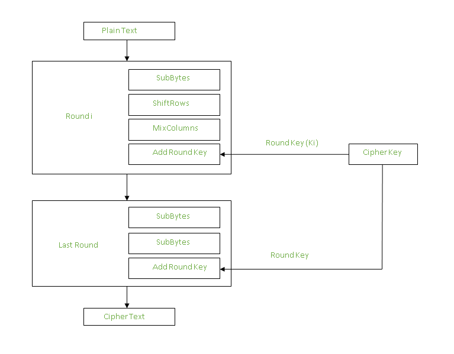

In a Symmetric key exchange, you and another person are going to arrive at the same answer while giving information back and forth which is going to allow you and the other person to reach the same answer. If one were to use a symmetric key exchange, a relationship should be set up ahead of time. If no relationship is set up before, it would be better to use a public key exchange/asymmetric key exchange. In the examples I am going to be calling the two parties bob and Alice.
The first key exchange was the Diffie-Hellman exchange, invented in 1976. The security of this program is based on
the fact that it is hard to solve a discreet log problem, unlike the RSA public exchange, which is reling on
it being hard to factor a number into two large prime numbers. This algorithm is not went as a way to
encrypt your data but as a way to calculate a shared key that you and the other person could use in another
encryption method that relies on a symmetric key.
The shared key is generated by first having the Bob and Alice agree on a public g and p, p being a large prime of some
sort, and g being a number such that you can use any combination of g to get all numbers in between 1 and p when moding g by p.
Bob and Alice are going to make a secret key that is less than the p. They are going to each use their own secret
key to power mod the g (secret key mod p). Bob and Alice then switch the number generated and raise the numbers
to their secret key which is going to give bob and Alice a shared secret key.
Bob and Alice agree on p = 11 and g=2
notice that 2 can cycle through all numbers between p
Bob choose x = 5
Alice chooses y = 4
Bob creates X= g^x mod p = 2^5 mod 11 = 10
Alice creates Y = g^y mod p = 2^4 mod 11 = 5
bob and Alice switch keys
Bob calculates Y^x mod p =5^5mod p = 1
Alice calculates X^y mod p =10^4mod p = 1
Notice that they have the same shared key in the end, it is not
a good shared key and is easy to brute force your way into getting the private keys
by solving the discreet log problem but it is an example. This process can be
adapted to add additional people into the exchange by having the shared end key
being g^xyz compared to the shared key being g^xy. To
make this secure, you need to have you n be large so that the cycle list
is very large and hard to brute force your way into getting the private key x and y.
The AES is standard that was created in 2001 and was adopted by the federal government, but is most likely not in use anymore, and is used pretty widely in wireless security and database encryptions. This encryption relies heavily that both sides of the standard having a lot of information.
Then encryption works by having grabbing 16 byte blocks
of data and transforming it with a series of actions.
First the 16 byte data is split into a 4 bye 4
matrix (1 byte in each spot) or large depending
on the amount of bytes but it needs to be a square
matrix. Second an amount of rounds is decided
depending on the byte size, for example 16 bytes has
10 rounds and that many keys are going to be generated.
Then the matrix is going to go through an amount
of rounds with each round having the changes:

use a substitute table to change the bytes in each
collom row combo.
The rows are then shifted in a different way for each
row, the first row not shifting, the second row shifts one to the
left, the third row shifts two left, and the fourth row shifts
three to the left. This step is skipped in the last round since
it does not add anything to the security.
The columns are going to be mixed up with matrix multiplication
Then the round key is going to be XORed to add
the key
To decrypt this, all you need to do is perform each of these operations in reverse
for each round to get back your plain text. The steps are as follows:
Add round key with XOR
Inverse the mixed columns. You can do this
in order mix the columns, you do matrix multiplication
and has an inverse.
undo the shift
Inverse the substitution
repeat for each round
This process is hard to follow along and visualize. I recommend going to my sources and watching the AES video. This might look like it would take a long time but the operations can be done extremely fast for a computer and because it is a standard intel the like CPUs have the AES built into it allowing for this to be done so that gig's of data per second can be encrypted and decrypted.